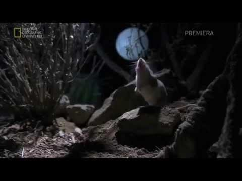

We have come from the shadows to share with the world the darkest things we have seen with our own eyes and to help you blend in with the terrors of the night. The most deadly of them all has a howl that will shiver your spine off. With great effort we have recorded this beast and its terror can be viewed below.
Freaky.... There's a lot we don't know about this monsterous creature, because all who have tried to gather more information have died soon after hearing the ominous howls... So even we, who have seen the darkest of darkness, have to wonder what this thing is capable of. Some think that it spends most of its residence underground, in a lair buried in the depths of the earth. Others believe that it migrates great distances feeding on deer and other large animals until it finds a suitable place with many unsuspecting prey. Whatever people believe, one thing is certain; if you live near the lair or migratory path of one of these beasts, it is only a matter of time... before they eat you.
There is one way to avoid this certain and terrifying demise. We have been observing these beasts from a great distance for some time and have determined that they don't attack things that are just as frightening as them. We offer a large selection of costumes that will keep these beasts weary and distant, just follow the link at the top of the page, purchase one of our costumes, and you can be safe in 3 to 5 business days!